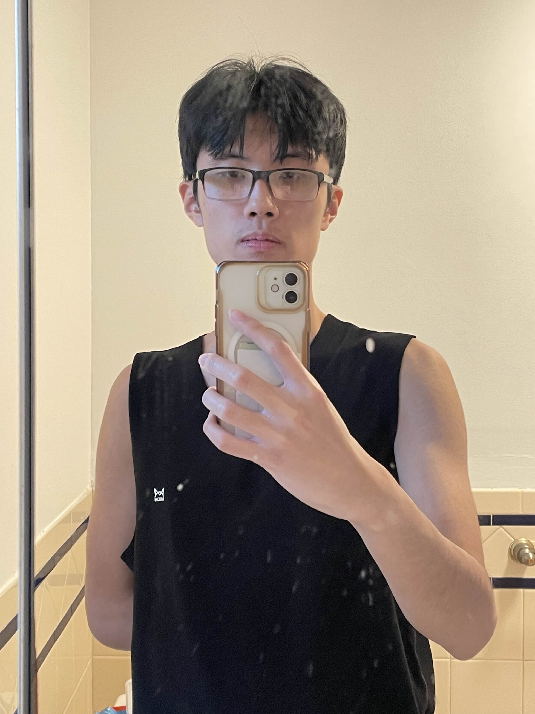

Allan Lin
Undergraduate Student
Computer Science Department
University of Massachusetts Boston


I am Allan Lin, a first year student at Umass Boston majoring in computer science. As for why I decided to pick computer science as my major, I enjoy creating video games in my free time. So far, I have been at Umass Boston for almost three months and I find it quite enjoyable here. I like to go the campus gym often when I have free time.
Prior to becoming a student at UMass University, I was a high school student at North Quincy High. While at North Quincy, I participated in quite a bit of extracurricular activities. During my 4 years in high school, I played volleyball (and I still do) and was part of the JROTC. Within the JROTC I did activiates such as Raider's Challenge and Marksmanship. Outside of school, I like to do many other activiates. These activiates range from playing sports like volleyball and ping pong, to hanging out with friends.

Here are some shows that I like to watch. I like to watch anime such as Haikyuu! and Jujustu Kaisen.
Professional Experience?
Currently Unemployed
[Courses Taken]
- Publication
- Highlight
- Others
- Eng 101 - Mon/Wes/Fri 10AM to 10:50 AM
- Greek and Roman Mythology - Mon/Wes/Fri 11AM to 11:50 AM
- Calc 1 - Mon/Wes/Fri 1PM to 1:50 PM
- FSC Seminar - Tues/Thur 9:30 AM to 10:20 AM
- Comp Sci - Tues/Thur 11AM to 12:15 PM
- Comp Sci Discussion - Tuesday 12:30PM to 1:45PM
- Calc Discussion - Wednesday 2PM to 2:30PM
Research
I am currently developing a new design paradigm for interacting with durable storage that takes into account performance asymmetry between read and write operations, as well as the variable access concurrency that different devices may support. In addition, I am designing new abstractions for data systems architectures supporting efficient hybrid transactional/analytical processing (HTAP). I am also working on designing modern data systems that can support efficient persistent deletes. Prior to joining BU, I worked on medical informatics including software/hardware co-design approaches using various machine learning and embedded system techniques for tele-health monitoring.
 .
.
Current Projects

The New Parametric I/O Model
We propose a simple yet expressive I/O model that considers asymmetry and concurrency of contemporary storage devices.
Learn more
Lethe: A Tunable Delete-Aware LSM Engine
Lethe provides persistence guarantees for delete operations within bounded time and enables efficient secondary range deletes in LSM-based storage engines.
Learn moreRelational Memory
We introduce a new type of near-memory computation to transform between row-oriented data to column-oriented data on the fly.
Contact
| Allan.Lin001@umb.edu | |
 |
Computer Science Department University of Massachusetts Boston 111 Cummington Mall Boston, MA 02125 |